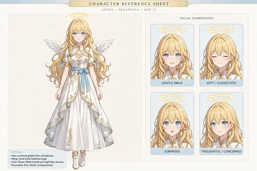
レア
キャラクター設定画
セラフィナの姿をまとめた設定画。金髪ウェーブにサイドの三つ編み、空色の瞳、白×金のドレスに水色リボン、小さな白い翼と淡く光る輪が特徴です。物語のすべての場面は、この姿を基準に描かれています。
第1弾「降臨」のカード全30種です。フィレンツェの序章から大阪への降臨、コンビニやメイドカフェでの場面まで、物語の始まりの場面がそろいます。
カードの画像はWeb鑑賞用サイズです。原画の高解像度イラストは、この弾のイラストパックでご覧いただけます。
この弾の所持 0 / 30種（0%）― あと30種で、この弾はコンプリートです
カードの画像はWeb鑑賞用サイズです。原画の高解像度イラストは第1弾『降臨 〜日本橋に染まるまで』のパック紹介ページからBOOTHのパックでご覧いただけます。ガチャで所持しているカードには「所持 ×N」と表示されます。

レア
セラフィナの姿をまとめた設定画。金髪ウェーブにサイドの三つ編み、空色の瞳、白×金のドレスに水色リボン、小さな白い翼と淡く光る輪が特徴です。物語のすべての場面は、この姿を基準に描かれています。
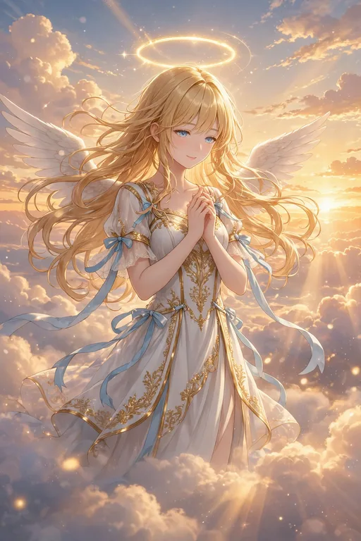
激レア
夕焼けの雲の上で微笑むセラフィナのキービジュアル。約500年ぶりの地上任務への期待を胸に、物語の始まりを象徴する一枚です。
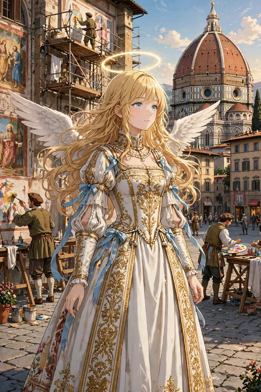
激レア
1500年頃のフィレンツェ。ドゥオモとフレスコ画の都で人々を癒していた、前回の降臨の日々を描いた序章の場面です。大阪での物語への、遠い前日譚にあたります。
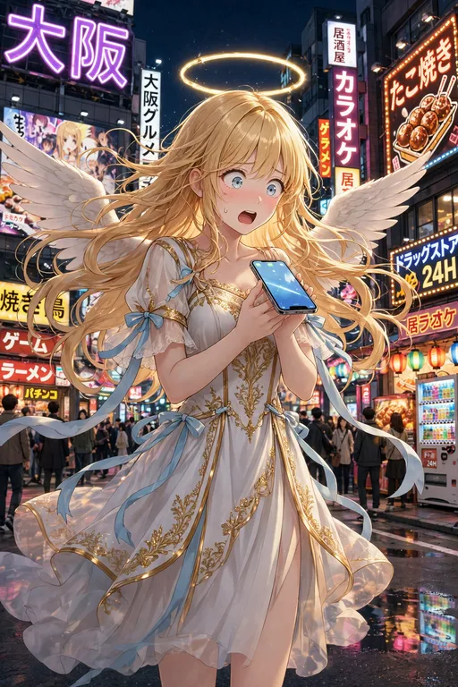
レア
大阪の繁華街に降り立った直後のセラフィナ。ネオンと人混みと自動販売機に圧倒され、スマホを逆さに持ってしまう第1話の場面です。カルチャーショックの連続はここから始まります。
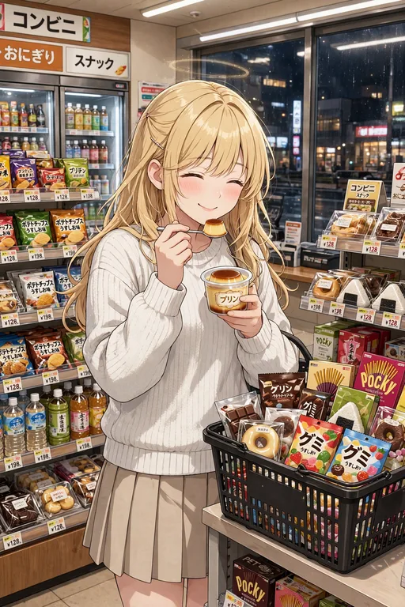
ノーマル
24時間明るく光るコンビニに足を踏み入れた場面。プリンの完成度に感動し、買いかごがお菓子で埋まっていきます。「コンビニという神殿」と呼んだ、第2話のひとコマです。
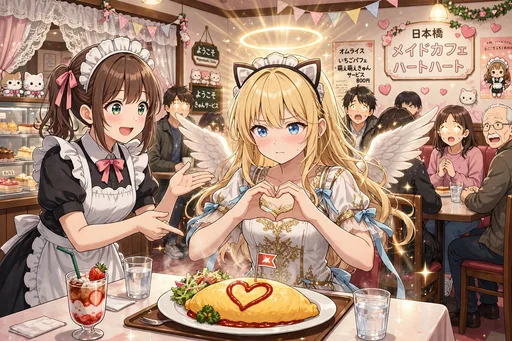
レア
日本橋のメイドカフェで、天使の格好をコスプレと間違われたまま「萌え萌えきゅん」を真剣にやりきる場面。本物の祝福の光が出てしまい、店内が騒然となりました。日本橋に染まる第一歩です。
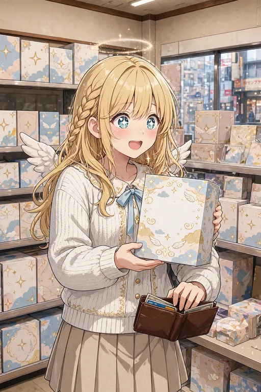
ノーマル
フィギュア店で自分そっくりの天使フィギュアを見つけた場面。目を輝かせて、つい財布を開けてしまいます。「自分を買う」という、日本橋ならではの出会いです。
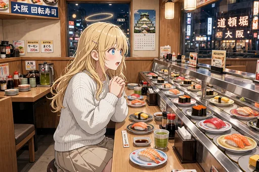
ノーマル
初めての回転寿司。目の前を流れていくお寿司に目を奪われながら、恐る恐る皿に手を伸ばします。回転寿司とICカードに驚く第3話の場面です。
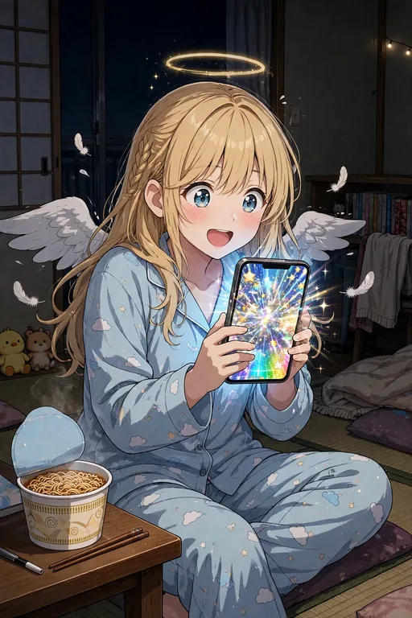
レア
深夜、スマホゲームのガチャを回すセラフィナ。結果に一喜一憂して羽根まで震える、第4話「ガチャと推し」の場面です。推し活デビューのきっかけになりました。
レア
カラオケボックスでマイクを握って熱唱する場面。歌って踊る楽しさに目覚めた、第5話のひとコマです。
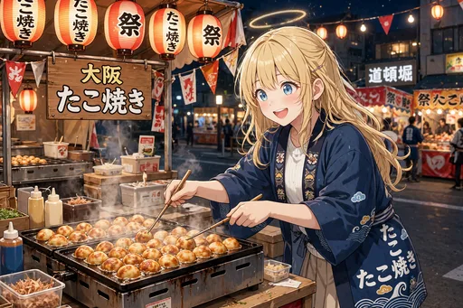
ノーマル
たこ焼きを食べる側から焼く側に回った場面。関西弁も少しずつ移り始めた第6話の頃で、手つきはなかなか様になっています。
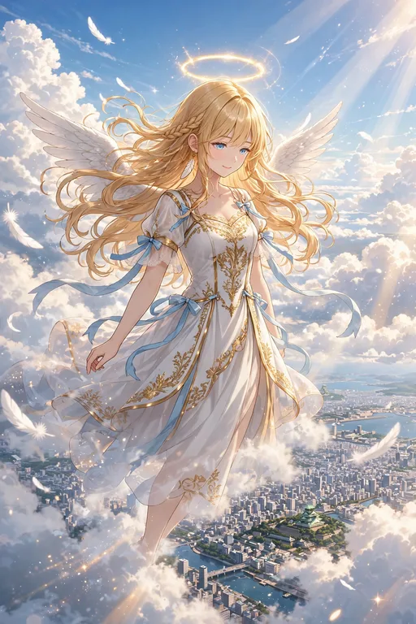
レア
雲を抜けて地上へ降りていく、降臨そのものの場面。約500年ぶりの任務に少し緊張しながらも、大阪の街を見下ろしています。物語の本当の幕開けです。
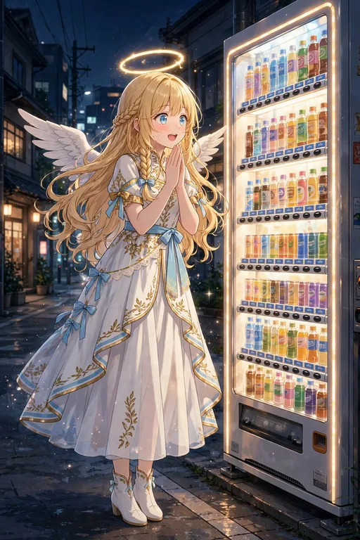
ノーマル
夜に光る自動販売機の前で足を止めた場面。押せば飲み物が出てくる仕組みに、天使も思わず見入ってしまいます。降臨直後の小さな驚きのひとつです。
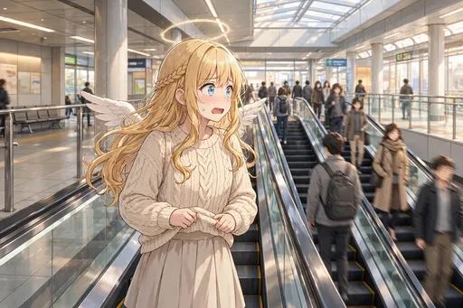
ノーマル
エスカレーターの立ち位置で戸惑う場面。大阪では右側に立つ習慣に、まだ慣れていない頃のひとコマです。地上の作法をひとつずつ覚えていく途中です。
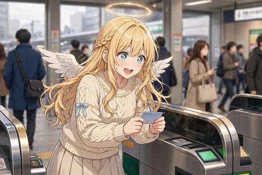
ノーマル
交通系ICカードを改札にタッチして「ピッ」と通れた瞬間。何度やっても感動してしまう、第3話でも描かれた名場面です。
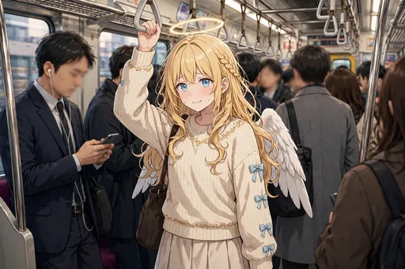
ノーマル
初めての満員電車。人波に揉まれながらも、なんとか吊り革につかまっています。地上の通勤風景に圧倒される、降臨間もない頃の場面です。
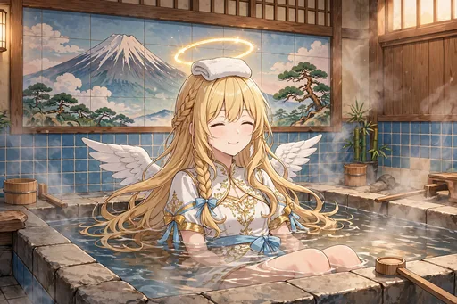
ノーマル
銭湯で頭にタオルをのせて湯船につかる場面。近所の人たちとの何気ない距離感に、ほっとするひとときです。日本の「湯」の文化に触れる一枚。
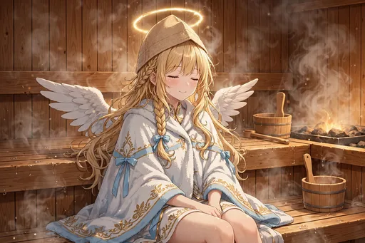
ノーマル
サウナで汗を流し、「整う」感覚を味わう場面。「天界より整う」とまで言ってしまうほど気に入った、第5話のエピソードです。
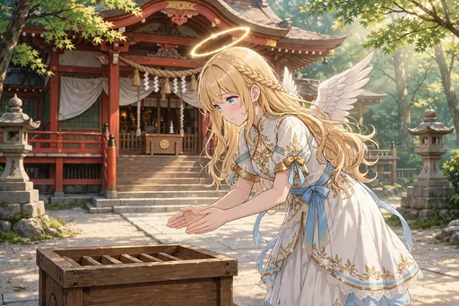
ノーマル
神社で二礼二拍手一礼を習ってお参りする場面。天使でありながら、日本の神様への作法を真剣に覚えようとしています。神仏とのご近所づきあいの芽生えです。
ノーマル
鉄板の上でお好み焼きをひっくり返すのに挑戦する場面。少し失敗気味ながらも、焼きたてをほおばる表情は満足げです。大阪の食文化に染まっていく途中の一枚。
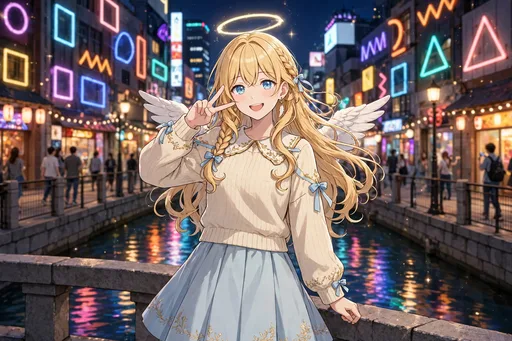
ノーマル
道頓堀の橋の上で記念写真のポーズをとる場面。大阪観光の定番スポットで、すっかり旅人気分です。降臨直後の頃の、まだ初々しい記念写真。
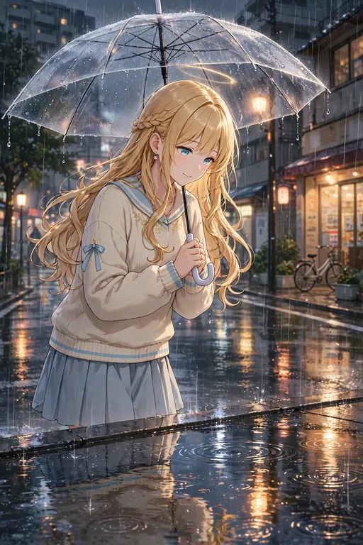
ノーマル
雨の日、透明傘をさして水たまりをのぞく場面。傘越しに見る雨の街も、天使には新鮮な景色です。地上の天気と付き合う日々の一コマ。
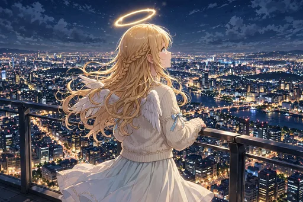
ノーマル
街の夜景を見上げる場面。地上の灯りの多さに、フィレンツェの頃との違いを静かに感じています。見守るべき人々の多さを思う一枚です。
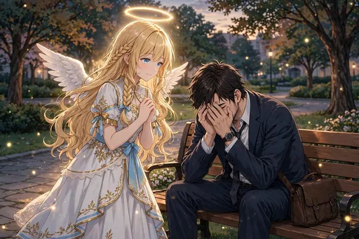
レア
疲れた会社員の隣にそっと現れて「おつかれさまです」と声をかける場面。どれだけ現代文化に染まっても変わらない、セラフィナの本分が表れた一枚です。
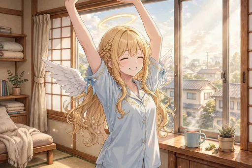
ノーマル
朝、窓辺で背伸びをする場面。地上での一日のはじまりにも、すっかり慣れてきました。生活リズムが整ってきた頃の何気ない朝です。
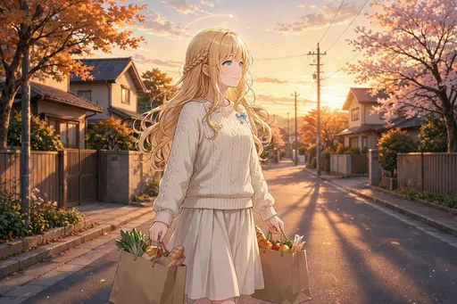
ノーマル
夕焼けの帰り道、買い物袋を提げて歩く場面。商店街の夕方の空気に馴染んで、もうすっかり「帰る人」の顔をしています。
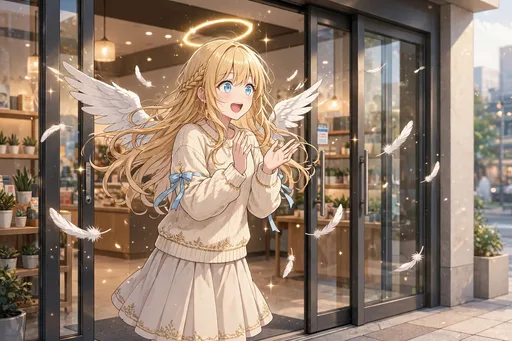
ノーマル
近づくだけで開く自動ドアに感動する場面。小さな仕組みひとつひとつに驚いていた、降臨直後ならではの反応です。
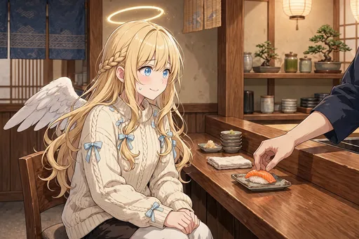
ノーマル
回らない寿司屋のカウンターで緊張する場面。回転寿司とは違う静かな空気に背筋を伸ばしています。少し背伸びをした食の体験です。
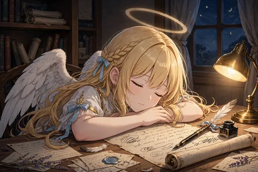
ノーマル
天界への報告書を書きながら、そのまま寝落ちしてしまった場面。地上での出来事が多すぎて、報告が追いつきません。がんばり屋の天使の、ほっとする弱点です。
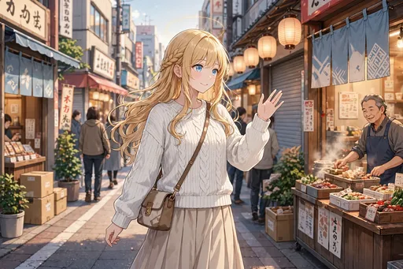
ノーマル
降臨から一か月後、私服で街にすっかり馴染んだ姿。ドレス姿だった頃と比べて、服装も表情も「生活者」のものになりました。第1弾の締めくくりの一枚です。